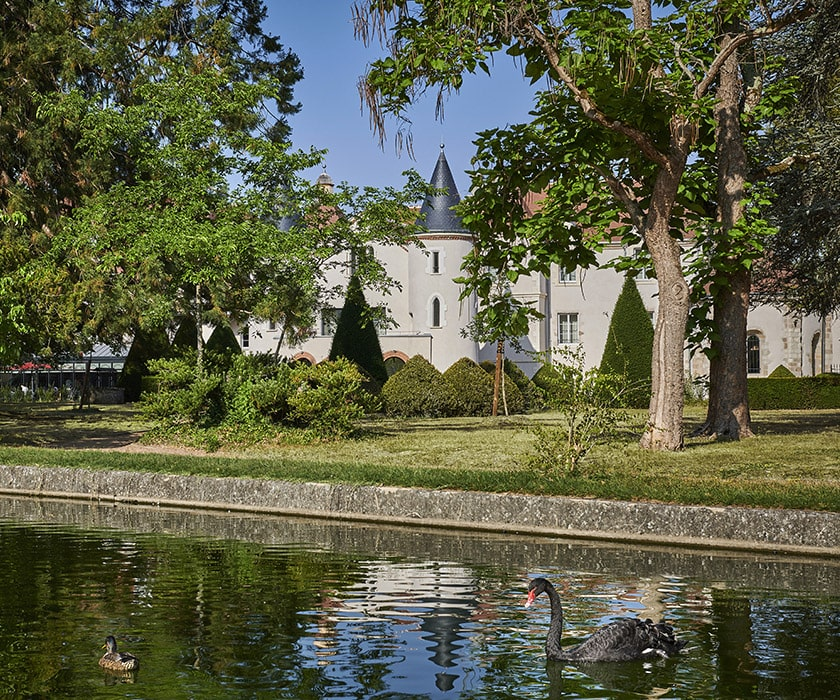
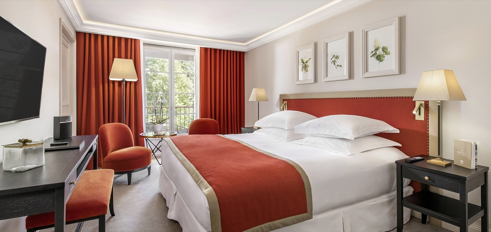
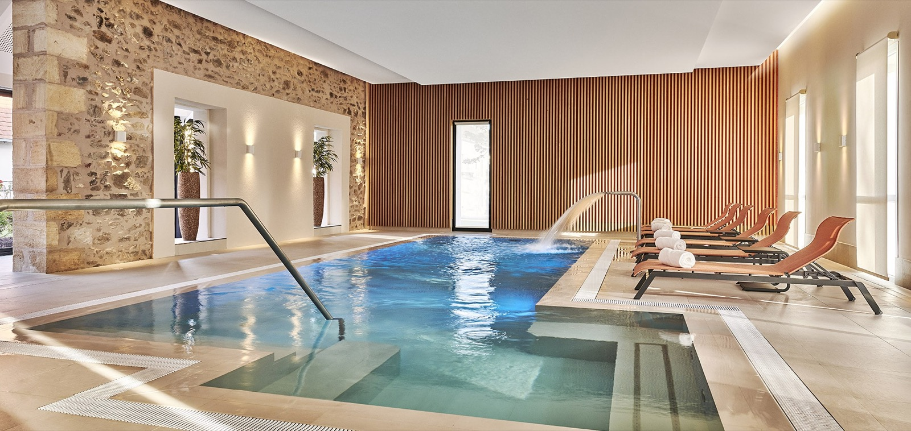

Château Saint-Jean, avis : la commanderie templière devenue Relais & Châteaux
À Montluçon, une chapelle du XIIe siècle abrite un restaurant étoilé sous un dôme de cuivre. Autour, dix-neuf chambres, trois hectares de parc et un étang à cygnes. Le tout dans une préfecture de l'Allier que personne n'associe au luxe hôtelier, ce qui est précisément l'intérêt de l'adresse.

Le restaurant La Chapelle, dans la chapelle du XIIe siècle. Le dôme de cuivre, dessiné par l'agence Jouin Manku, coiffe la nef sans y toucher. Photo : Château Saint-Jean, site officiel.
TL;DR : l'essentielScore LMHS 9,2/10, Indice Prestige Patrimonial 4,8/5
- Le lieu. Une commanderie de l'ordre du Temple réputée dès 1118, dont la chapelle du XIIe siècle subsiste et abrite la tombe du commandeur Michel de Letrange, datée de 1148.
- La table. La Chapelle, une étoile au guide MICHELIN depuis 2020 et confirmée en 2026, sous la conduite du chef Olivier Valade. Six services par semaine, dans la nef, sous un dôme de cuivre.
- La maison. 19 chambres et suites seulement, cinq catégories, toutes tournées vers le parc Saint-Jean et son étang. Membre des Relais & Châteaux, Travellers' Choice Best of the Best 2026 et premier des dix hôtels de Montluçon sur Tripadvisor.
Ce que cet avis ne fait pas : nous n'avons pas dormi sur place. C'est un avis documentaire, construit sur les sources officielles de l'établissement, le guide MICHELIN et la presse, et il le dit plutôt que de laisser croire le contraire. Nous ne publions par ailleurs aucun tarif, faute de grille publiée.
Une commanderie de 1118, une chapelle, et une tombe de 1148
L'histoire commence sur une route. Réputée dès 1118, la commanderie de Saint-Jean d'entre les Vignes marquait une étape entre la vallée du Cher et l'ancienne voie romaine qui reliait Bourges à Néris-les-Bains. Elle appartenait à l'ordre du Temple, et c'est un point que les brochures escamotent souvent : à la dissolution de l'ordre, en 1310, la commanderie passa aux Hospitaliers, les chevaliers de Saint-Jean, qui lui ont laissé leur nom. Le lieu n'a donc pas été templier d'un bout à l'autre, il a changé d'ordre, et le mot « Saint-Jean » du panneau d'entrée vient du second, pas du premier.
De cette période, la chapelle du XIIe siècle subsiste. On y a mis au jour l'une des plus anciennes tombes des frères inhumés sur place, celle du commandeur Michel de Letrange, datée de 1148. C'est, à notre connaissance, la seule salle de restaurant étoilée de France qui possède ce genre de pièce à conviction.
Le reste du récit est plus récent, et plus romanesque qu'il n'en a l'air. Nicole et Jean-Claude Delion se sont rencontrés au Château Saint-Jean en 1968, et s'y sont mariés. Le domaine a périclité à partir des années 2000, jusqu'à l'abandon. En 2016, le couple rachète le lieu de sa rencontre. Deux années de chantier plus tard, en 2019, il rouvre en cinq étoiles. Ce n'est pas une opération immobilière déguisée en histoire d'amour : c'est l'inverse, et cela se sent dans le soin apporté aux détails qui ne rapportent rien.

Le château vu de l'étang, dans les trois hectares du parc Saint-Jean. Photo : Château Saint-Jean, site officiel.
Jouin Manku, et le dôme de cuivre qui ne touche pas la voûte
Les Delion n'ont pas confié le chantier à un décorateur d'hôtel. Ils ont appelé l'agence Jouin Manku, c'est-à-dire le designer Patrick Jouin et l'architecte Sanjit Manku, à qui l'on doit notamment la salle d'Alain Ducasse au Plaza Athénée. Le duo a dessiné les espaces d'accueil, le bar et le restaurant gastronomique. Attribuer ce travail au seul Patrick Jouin, comme on le lit partout, revient à oublier la moitié de la signature : Manku est l'architecte du binôme, et sur un monument, cela n'est pas un détail.
Leur geste principal tient en un objet : dans la nef, un large dôme de cuivre descend au-dessus des tables, capte la lumière et absorbe le bruit du service, sans jamais s'appuyer sur les pierres du XIIe. Autour, la maçonnerie médiévale reste nue, brique et moellon apparents, avec ses arcs et son oculus d'origine. C'est exactement ce que l'on attend d'une intervention contemporaine sur un monument : réversible, lisible, et assez forte pour ne pas avoir l'air d'une excuse. C'est ce qui vaut à la maison un Indice Prestige Patrimonial de 4,8/5, le même instrument que celui appliqué à la Villa Florentine de Lyon, ancien couvent du XVIIe, et la même note.
Dix-neuf chambres, cinq catégories, une seule vue

Une suite du Château Saint-Jean. Photo : Château Saint-Jean, site officiel.
Dix-neuf clés, réparties en cinq catégories : Chambre Classique, Chambre Privilège, Junior Suite, Suite et Suite Deluxe. C'est peu, et c'est le premier argument de la maison : à dix-neuf chambres, un cinq étoiles ne peut pas se cacher derrière ses process. Le parti pris décoratif est Renaissance, sobre, sans surcharge : bois foncé, teintes claires, grandes ouvertures. Toutes les chambres regardent le parc Saint-Jean et son étang, ce qui, dans une maison de cette taille, veut dire qu'il n'y a pas de mauvaise chambre, seulement des chambres plus grandes que d'autres.
Côté équipement, l'établissement annonce la fibre haut débit et se déclare accessible aux personnes à mobilité réduite, ce qui reste rare dans un monument de cette époque et mérite d'être signalé.
La Chapelle : une étoile depuis 2020, et l'ambition de la deuxième
Olivier Valade a obtenu l'étoile en 2020, deux ans après la réouverture, et le guide MICHELIN 2026 la lui a confirmée. Son parcours dit assez ce qu'il cherche : la Côte d'Or de Bernard Loiseau à Saulieu, Hélène Darroze, et surtout la Maison Tirel Guérin en Bretagne, où il a récupéré une étoile perdue. Un chef qui a déjà fait remonter une maison n'aborde pas une cuisine de la même façon qu'un chef qui n'a jamais eu à le faire.
Le guide décrit une cuisine de produits de saison, entre tradition et modernité, qui réinvente les classiques régionaux : barbue délicatement fumée, blanquette truffée, pigeon aux champignons des bois et jus aux noix. Le service se fait en six services hebdomadaires : les mercredis, jeudis, vendredis et samedis soir, les samedis et dimanches à midi. Réservation obligatoire.
Le propriétaire, lui, ne s'en cache pas. Interrogé par la radio locale RJFM en mars 2026, il posait l'objectif en une phrase : « Il faut qu'on ait la deuxième étoile. » Elle n'est pas venue en 2026. Elle reste l'horizon déclaré de la maison, et c'est une information plus utile qu'un adjectif.
À côté, le Bistrot Saint-Jean ouvre midi et soir sous une verrière donnant sur le parc, et le Bar Saint-Jean complète l'ensemble. C'est ce qui permet de séjourner deux nuits sans manger deux fois le même repas, et cela compte plus qu'on ne croit dans une maison isolée.
Le spa : réservé aux résidents, et c'est assumé

La piscine intérieure et son bain à remous intégré. Photo : Château Saint-Jean, site officiel.
L'établissement l'écrit noir sur blanc : « en raison d'une capacité d'accueil limitée, l'accès au spa et aux soins est réservé à la clientèle logeant à l'hôtel ». Pour un lecteur qui cherche une entrée à la journée, c'est une fin de non-recevoir. Pour un client qui dort sur place, c'est exactement l'inverse : dix-neuf chambres pour un seul bassin, cela veut dire un spa vide la plupart du temps.
L'espace se compose d'un hammam, d'une douche sensorielle, d'un bain à remous intégré dans la piscine intérieure, elle-même dotée d'un système de nage à contre-courant et ouverte sur l'hippodrome. S'y ajoutent une grande salle dédiée aux massages et aux soins du corps, et une salle de fitness. Les murs de pierre blanche apparente et les baies vitrées donnant sur un jardin de plantes aromatiques font le reste. Ouverture tous les jours, de 8 h à 20 h sans interruption, sur réservation au +33 (0)4 70 03 26 57, avec présentation dix minutes avant le soin et facturation de tout rendez-vous décommandé à moins de vingt-quatre heures.
La fiche LMHS détaillée
Notre fiche décompose l'établissement en cinq axes de poids égal, choisis selon ce qu'il propose réellement. La note globale est leur moyenne simple, et vous pouvez la recalculer.
| Axe | Note | Ce qui la justifie |
|---|---|---|
| Patrimoine et architecture | 9,5/10 | Chapelle du XIIe intacte, tombe de 1148, intervention Jouin Manku réversible et lisible |
| Table | 9,5/10 | Une étoile MICHELIN depuis 2020, confirmée en 2026, doublée d'un bistrot et d'un bar |
| Chambres et confort | 9,0/10 | 19 clés, cinq catégories, toutes sur le parc, fibre, accès PMR. Un étage en cours de rénovation en 2026 |
| Cadre et parc | 9,5/10 | 3 hectares, étang, arbres centenaires, cygnes et canards, à cinq minutes du centre médiéval |
| Spa | 8,5/10 | Bel équipement pour 19 chambres, mais un seul bassin, une seule salle de soins, et aucun accès extérieur |
Score fiche LMHS : 9,2 / 10 · (9,5 + 9,5 + 9,0 + 9,5 + 8,5) ÷ 5 = 9,2 · Relevés du 11 août 2026, sur sources officielles et documentaires, sans séjour de contrôle.
Pour situer ce 9,2 : c'est la troisième note la plus haute de nos avis, derrière Monteverdi Tuscany (9,4/10) et la Villa Florentine (9,3/10), et devant le Château du Portereau et The Romanos, tous deux à 9,1/10. Nous préférons donner ce repère plutôt qu'un superlatif : une note ne veut rien dire si l'on ne sait pas ce qu'elle bat.
Le bémol LMHS : les deux points qui manquent tiennent au spa et à la saison. Un seul bassin et une seule salle de soins, c'est cohérent avec dix-neuf chambres mais cela interdit de venir pour le spa seul, et il n'y a pas d'espace extérieur. Quant au calendrier, la maison n'est pas ouverte toute l'année : en 2026, elle a repris sa saison début mars, et un étage de chambres était encore en travaux. Vérifiez les dates avant de caler un week-end de janvier.Pourquoi cette page ne publie aucun tarif
Le Château Saint-Jean ne publie pas de grille tarifaire sur son site, et nous n'en avons trouvé aucune version officielle recoupable. Les fourchettes qui circulent, de l'ordre de deux cents euros pour une Chambre Classique à un peu plus de quatre cents pour une Suite Deluxe, sont plausibles mais nous ne les avons pas vérifiées à la source, et nous ne publions pas de chiffre que nous ne pouvons pas défendre.
La bonne méthode ici est le devis nominatif, par téléphone ou par mail, en précisant la catégorie, la période et si vous voulez une table à La Chapelle le soir même : sur dix-neuf chambres et six services hebdomadaires, c'est la disponibilité croisée des deux qui commande, pas le prix affiché. Nous publierons la grille dès que l'établissement nous la communiquera.
Le mot de SwannLe luxe hôtelier français n'a pas d'obligation d'être sur la côte
Montluçon n'est pas une destination. C'est une sous-préfecture de l'Allier que l'on traverse en allant ailleurs, et c'est précisément ce qui rend cette maison intéressante. Un couple y a racheté le lieu de sa rencontre, appelé une agence qui travaille pour Ducasse, et obtenu une étoile en deux ans dans un département qui n'en comptait pas. Rien de tout cela n'était probable. Ce que je retiens n'est pas le dôme de cuivre, aussi beau soit-il, c'est la tombe de 1148 qu'on a laissée dans la salle plutôt que de la déplacer au sous-sol. Une maison qui décide de dîner à côté de son commandeur du XIIe siècle a compris quelque chose que beaucoup de palaces neufs cherchent encore.
Swann Bertaud, rédacteur hôtellerie de luxe
Infos pratiques et accès
- Adresse : Avenue Henri de la Tourfondue, Parc Saint-Jean, 03100 Montluçon, Allier, Auvergne
- Téléphone : +33 (0)4 70 03 26 57
- Courriel : reservation@chateau-saint-jean.com
- Classement : 5 étoiles, membre des Relais & Châteaux
- Capacité : 19 chambres et suites, cinq catégories
- Restaurants : La Chapelle, une étoile MICHELIN, six services par semaine ; Bistrot Saint-Jean ; Bar Saint-Jean
- Spa : tous les jours de 8 h à 20 h, réservé aux clients de l'hôtel
Montluçon se rejoint en moins de quatre heures de Paris par l'A71, sur l'axe qui descend vers Clermont-Ferrand. Autour, la région donne de vraies raisons de rester deux nuits : la forêt de Tronçais, l'une des plus belles chênaies d'Europe, à trois quarts d'heure ; la chaîne des Puys, inscrite au patrimoine mondial de l'UNESCO depuis 2018, à un peu plus d'une heure ; et le Street Art City de Lurcy-Lévis, ancien centre de formation des télécoms devenu terrain de fresques monumentales, à une heure environ.
FAQ : Château Saint-Jean, Montluçon
Quelle note LMHS le Château Saint-Jean obtient-il ?
9,2/10 à la fiche LMHS, moyenne simple de cinq axes de poids égal : patrimoine et architecture 9,5, table 9,5, chambres et confort 9,0, cadre et parc 9,5, spa 8,5. C'est la troisième note la plus haute de nos avis, derrière Monteverdi Tuscany (9,4) et la Villa Florentine de Lyon (9,3). L'établissement obtient par ailleurs un Indice Prestige Patrimonial de 4,8/5.
Le Château Saint-Jean était-il vraiment une commanderie templière ?
Oui, et il faut être précis : la commanderie de Saint-Jean d'entre les Vignes, réputée dès 1118, relevait de l'ordre du Temple et marquait une étape entre la vallée du Cher et l'ancienne voie romaine Bourges à Néris-les-Bains. À la dissolution de l'ordre, en 1310, elle est passée aux Hospitaliers, les chevaliers de Saint-Jean, dont elle a gardé le nom. La chapelle du XIIe siècle subsiste, avec la tombe du commandeur Michel de Letrange datée de 1148.
Qui a rénové le Château Saint-Jean ?
Nicole et Jean-Claude Delion, qui s'y étaient rencontrés en 1968 et mariés, ont racheté le domaine à l'abandon en 2016. La rénovation a été confiée à l'agence Jouin Manku, le designer Patrick Jouin et l'architecte Sanjit Manku, à qui l'on doit notamment la salle d'Alain Ducasse au Plaza Athénée. Ils ont dessiné les espaces d'accueil, le bar et le restaurant gastronomique. L'hôtel a rouvert en 2019.
Le restaurant La Chapelle est-il étoilé, et quand est-il ouvert ?
Oui : une étoile au guide MICHELIN, obtenue en 2020 et confirmée dans l'édition 2026, sous la conduite du chef Olivier Valade. La Chapelle assure six services par semaine : les mercredis, jeudis, vendredis et samedis soir, ainsi que les samedis et dimanches à midi. Réservation obligatoire au +33 (0)4 70 03 26 57. Le Bistrot Saint-Jean, lui, sert midi et soir.
Le spa du Château Saint-Jean est-il accessible aux non-résidents ?
Non. L'établissement précise que, en raison d'une capacité d'accueil limitée, l'accès au spa et aux soins est réservé à la clientèle logeant à l'hôtel. Le spa ouvre tous les jours de 8 h à 20 h sans interruption et comprend un hammam, une douche sensorielle, un bain à remous intégré à la piscine intérieure dotée d'un système de nage à contre-courant avec vue sur l'hippodrome, une salle de massage et un espace fitness.
Combien de chambres compte le Château Saint-Jean ?
19 chambres et suites, réparties en cinq catégories : Chambre Classique, Chambre Privilège, Junior Suite, Suite et Suite Deluxe. Toutes donnent sur le parc Saint-Jean de trois hectares et son étang. L'hôtel annonce la fibre haut débit et se déclare accessible aux personnes à mobilité réduite.
Quels sont les tarifs du Château Saint-Jean ?
L'établissement ne publie pas de grille tarifaire, et nous ne publions pas de chiffre que nous n'avons pas vérifié à la source. La bonne méthode est le devis nominatif, en précisant la catégorie, la période et si vous souhaitez une table à La Chapelle : sur dix-neuf chambres et six services hebdomadaires, c'est la disponibilité croisée des deux qui commande.
Le Château Saint-Jean est-il ouvert toute l'année ?
Non, la maison fonctionne par saison. En 2026, elle a repris début mars, et un étage de chambres était alors encore en rénovation. Il faut donc vérifier les dates d'ouverture avant de caler un séjour en hiver, ce qui vaut aussi pour La Chapelle, dont le calendrier suit celui de l'hôtel.
Méthode et sources
Avis établi à la fiche LMHS sur 10, moyenne simple de cinq axes de poids égal, doublée de l'Indice Prestige Patrimonial sur 5, le même instrument que celui appliqué à la Villa Florentine de Lyon. Aucun séjour de contrôle n'a été effectué, et nous ne prétendons pas le contraire : ni nuit sur place, ni repas à La Chapelle, ni soin au spa. L'ensemble des caractéristiques, horaires, équipements et éléments d'histoire a été relevé le 11 août 2026 sur le site officiel de l'établissement, sur le guide MICHELIN, chez Relais & Châteaux et dans la presse locale et professionnelle, puis recoupé. La note de la table s'appuie sur la distinction MICHELIN et non sur un repas de la rédaction. Aucun tarif n'est publié, faute de grille officielle, et la page explique pourquoi. Photographies : site officiel du Château Saint-Jean. Aucun partenariat commercial, aucune affiliation, aucun séjour offert.
Sources utiles
- Château Saint-Jean, site officiel
- Château Saint-Jean, le spa et l'espace bien-être
- Guide MICHELIN, La Chapelle, une étoile
- Relais & Châteaux, restaurant La Chapelle
- RJFM, « Il faut qu'on ait la deuxième étoile », mars 2026
Pour aller plus loin
- Villa Florentine Lyon, avis, l'autre monument reconverti de notre classement, au même Indice Prestige Patrimonial
- Château du Portereau, avis, cinq siècles et un spa à quinze minutes de Nantes
- La Ferme Saint-Siméon, Honfleur, l'auberge où l'impressionnisme a commencé, au même exercice documentaire
- Week-end spa en France, 9 adresses et ce que deux nuits coûtent réellement
- Les 50 meilleurs hôtels & spas de France 2026, le palmarès national au Protocole LMHS
- Hôtel avec spa privatif, 12 adresses testées du chalet au château
- Notre méthode, les grilles de notation et les règles d'indépendance